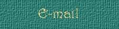

Notes From Wing Watchers
These notes are an attempt , by Wing Watchers, to keep the interest of our Visitors peeked. We are going to try a new concept with the site as the months go by. Right now we have all our photos (habitat,crawly things, etc.)geared toward summertime. We will be changing photos of the habitats as the seasons change. Can't go birding at a site in February and see pics from summer. Some of the places that are listed for birding sites will be discontinued through the frozen times because of inaccessibility and other sites will be added as we do our fall and winter birding. The Crawly Things page will remain even though new bugs in the cold months are tough to find. We are developing an archive, so to speak, that we will keep to try to add new pics from time to time. Other plans are to add a special page just for you avid "Leaf Peepers". That will happen as soon as the beauty of New England and Connecticut unfolds for us all. These plans are in the formative stage so please be patient as we may change as fast and unexpectly as Mother Nature, herself.
*************************************************************** I have just gained a new pleasureable aspect to birding, recently. With all this site has going on, I'm taking the time to expand my perspective on birding, time to learn more, and sharing my thoughts and photos. I was able to accomplish this by joining the National Birders Forum through Yahoo.com/Groups and The Bird Forum at www.birdforum.net,(international). I'm meeting some great people and am surfing through some of the best bird photos and nature photos that I've ever seen. Some of my pics can be seen on either forum by wingwatchers. Try it out for yourself, its good fun and rewarding. |




|
Except as noted, site content and photographs copyright © 2002 Dave Pelletier aka Wing Watchers, all rights reserved. |

Banners
|Bird Photos
|Bird Sightings
|Birding Sites
|Email
|Nature Tales
Fledglings
|Guestbook |Home
|Link Exchange
|Links
|Nature Photos
Crawly Things |Awards and Webrings
|
|